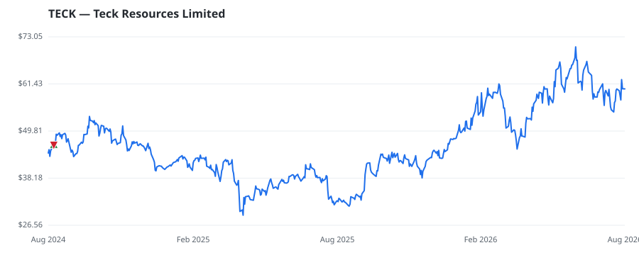

bullish · bearish · n/a — dots: price>SMA10 · SMA10>SMA50 · SMA50>SMA200 · up>down volume (20d)
Other · large cap
Members who bought TECK earned a dollar-weighted +0.0% from their disclosure dates, versus +0.0% for the S&P 500 over the same holding windows (+0.0% alpha).

▲ green = a disclosed purchase · ▼ red = a disclosed sale (plotted on disclosure date)
Teck is a base metals miner with copper and zinc operations in Canada, the United States, Chile, and Peru. After selling its metallurgical coal business, copper is now its major commodity by EBITDA contribution, followed by zinc. Teck is a top-three zinc miner. Its major new copper mine in Chile at the majority-owned Quebrada Blanca 2, in partnership with Sumitomo, will drive an increase in Teck's attributable copper production by roughly 80%. Along with a number of additional copper growth options, Teck's strategy is to rebalance its portfolio to low-carbon metals such as copper. It sold its · website
| Member | Chamber | Out-performer | Disclosed buys $ | Return on buys |
|---|---|---|---|---|
| Jonathan Jackson | house | — | $32K | +0.0% |
Disclosed $ figures are bracket midpoints — filings report ranges (e.g. $1,001–$15,000), not exact amounts.